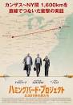
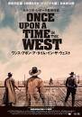
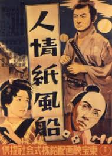

|  |  | |
| ガリーボーイ | ハミングバード・プロジェクト 0.001 秒の男たち | ワンス･アポン･ア･タイム･イン･ザ･ウェスト |
|---|---|---|
| 2019年 製作国：インド 上映時間：154分 |
2019年 製作国：カナダ,ベルギー 上映時間：111分 |
1968年 製作国アメリカ,イタリア 上映時間：165分 |
| 想像の範囲内だった人生から、誰も想像できない人生へ―インドのスラム街で生まれ育った“ガリーボーイ(路地裏の青年)”。自身の運命を変えるべくフリースタイルラップの大会で優勝を目指す。インドのヒップホップアーティスト、Naezyの軌跡をベースにしたヒューマンドラマ。 | 高速で株の売買をする高頻度取引で年間500億円以上の利益を得るため、カンザス州のデータセンターからＮＹ証券取引所まで約1,600kmを一直線の光回線で繋ぐことを思いついた主人公。0.001秒の時間短縮を目指して奮闘する彼らの前に、1万件の地主との買収交渉など次々と苦難が立ちはだかる。実話！ | 大陸横断鉄道の敷設により新たな文明の波が押し寄せていた西部開拓期を舞台に、女性主人公の目を通して、移り変わる時代とともに滅びゆくガンマンたちの落日を描く。マカロニ・ウエスタンで知られるイタリアの巨匠セルジオ・レオーネが1968年に手がけた作品。 |
| 公式サイト | 公式サイト | 公式サイト |
| インドの極貧スラムからラップで脱出！ この世界にラップがあってよかった！ |
15msを13msにする「だけの」死闘！ あぶく銭のカンカン踊り！ |
出演者の「顔圧」すごめでグッとくる。 画面から土埃と汗の匂いがするようです。。。 |
|  | ||
| ジョーカー | 人情紙風船 | ベニスに死す |
|---|---|---|
| 2019年 製作国：アメリカ 上映時間：122分 |
1937年 製作国：日本 上映時間：86分 |
1971年 製作国：イタリア 上映時間：135分 |
| 「どんな時も笑顔で人々を楽しませなさい」という母の言葉を胸にコメディアンを夢見る、孤独だが心優しいアーサー。都会の片隅でピエロメイクの大道芸人をしながら母を助け、同じアパートに住むソフィーに秘かな好意を抱いている。笑いのある人生は素晴らしいと信じ、ドン底から抜け出そうともがくアーサーはなぜ、狂気溢れる"悪のカリスマ"ジョーカーに変貌したのか? 切なくも衝撃の真実が明かされる！ | わずか28歳で戦病死した昭和初期の名監督・山中貞雄の遺作となった人情時代劇。江戸時代。貧乏長屋で暮らす髪結いの新三は、個人で賭場を開いてヤクザから目をつけられる。一方、新三と同じ長屋に住む浪人・又十郎は、かつて父が世話した侍・毛利に仕官を頼むが全く相手にされない。ある日、偶然から質屋の娘を誘拐した新三は、娘を長屋へと連れて帰るが… | イタリアの巨匠ヴィスコンティ畢生の超大作。静養のためベニスを訪れた老作曲家は、ふと出会った貴族の血を引く美少年の美しさの虜となる。病に侵された老作曲家は、日々少年の姿を追ってベニスの街を彷徨い続けるが―。原作はトーマス・マンの同名小説。 |
| 公式サイト | 参考サイト | 参考サイト |
| まだ見てない。 けど絶対ヤバイやつ...！ |
戦没死した山中貞雄の遺作。こんな大傑作製作当時、28歳だったという事実にブルル。 | 眼福。 でもある意味ヤバイやつ。 |